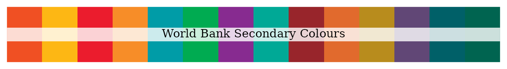
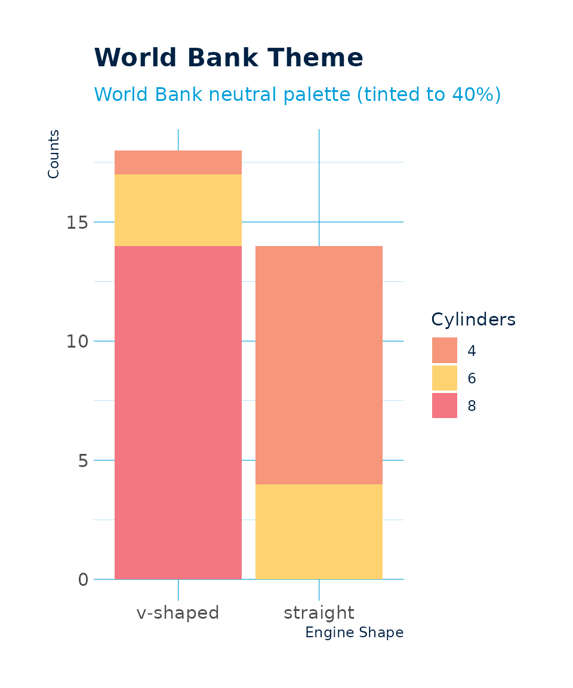
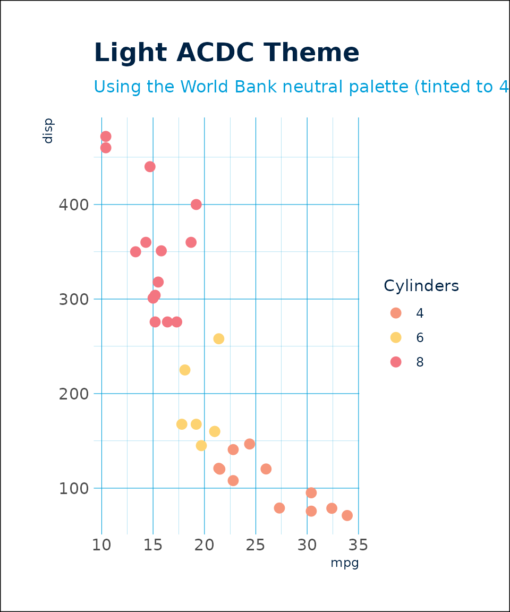

The World Bank Group (WBG) comprises five global institutions working with a single strategy of achieving the twin goals of ending extreme poverty by 2030 and boosting shared prosperity:
IBRD - The International Bank for Reconstruction and Development is the original World Bank institution, providing loans and other assistance primarily to middle-income countries.
IDA - The International Development Association is the part of the World Bank that helps the world’s poorest countries, providing concessional loans, grants, and guarantees for programs that boost economic growth, reduce inequality, and improve people’s living conditions.
IFC - International Finance Corporation is the largest global development institution focused exclusively on the private sector, helping developing countries achieve sustainable growth by financing investment, mobilizing capital in international financial markets, and providing advisory services to businesses and governments.
MIGA - The Multilateral Investment Guarantee Agency promotes foreign direct investment into developing countries. offering political risk insurance (guarantees) to investors and lenders.
ICSID - The International Centre for Settlement of Investment Disputes provides international facilities for conciliation and arbitration of investment disputes.
World Bank Colours
The World Bank employs four corporate colours: Blue, Cyan, Black, and White.
These are complemented by a set of fourteen secondary colours.

World Bank Palettes
In addition to the primary and secondary colours, the colours can be grouped into a bright palette and a neutral palette along with tinted palettes for each World Bank colour.


World Bank ggplot2 theme
A World Bank ggplot2 theme function called
theme_wb() is included in the paleta package.
Following are examples of how it can be used.

